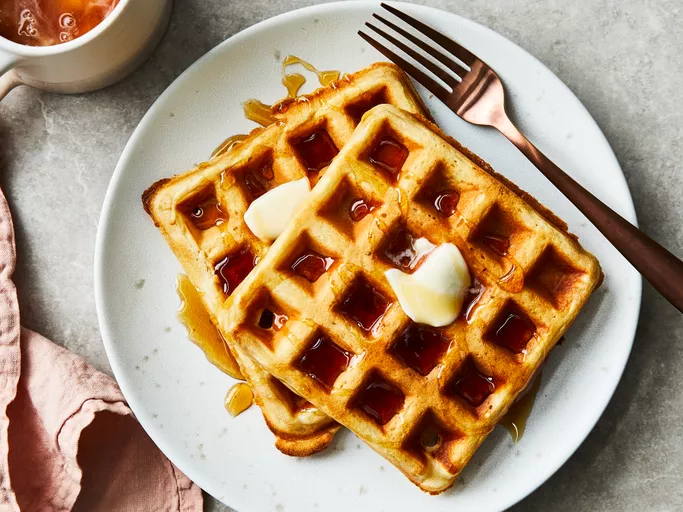

Home
Classic Waffles

Description
With just basic pantry staples like flour, eggs, and milk, these waffles require very little prep. Home cooks of all levels praise this simple method for creating fluffy, crisp waffles every time.
Ingredients
- 2 cups all-purpose flour
- 1 teaspoon salt or to taste
- 4 teaspoons baking powder
- 2 tablespoons white sugar
- 2 large eggs
- 1 ½ cups warm milk
- ⅓ cup butter, melted
- 1 teaspoon vanilla extract
Steps
- Gather all ingredients.
- Mix flour, salt, baking powder, and sugar together in a large bowl; set aside. Preheat waffle iron to desired temperature.
- Beat eggs in a separate bowl; stir in milk, butter, and vanilla.
- Pour milk mixture into flour mixture; beat until blended.
- Ladle batter into a preheated waffle iron.
- Cook waffles until golden and crisp.
- Serve immediately and enjoy!